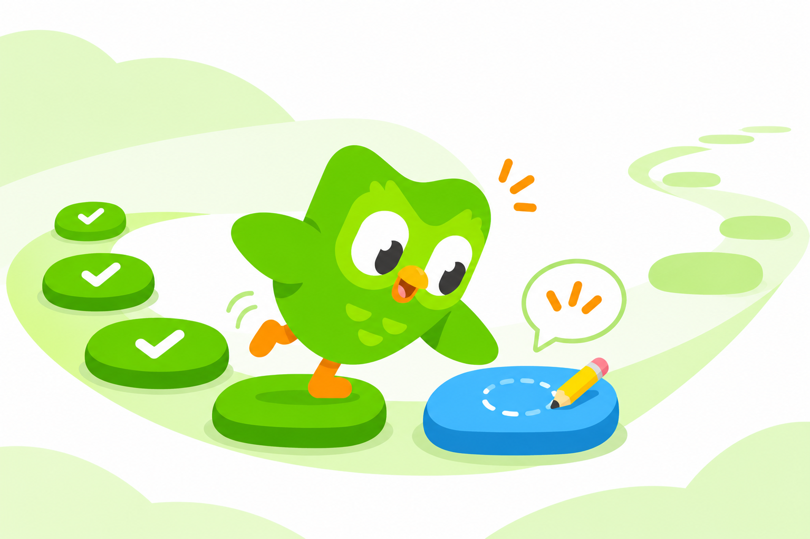

我每天都在学，只是越来越想赶紧结束
每天都打开多邻国，却越来越想赶紧结束。遇到不会的题时，学会和完成打卡，开始要求我做出不同的选择。
我每天都在用多邻国，但每天都不太想打开它。白天拖着，到了晚上准备睡觉，提醒又来了，才赶紧做几道题。碰到不会的，就找提示；实在答不出来，就回去做简单的。至于学到了什么，那时候已经顾不上了。
这样说起来，很容易觉得我是懒，或者根本不想学。可我觉得还应该再往下问一点：为什么白天不想做的事，到了最困的时候反而一定要做？如果只是为了学点东西，这显然不是一个好安排；但如果是为了完成今天的打卡，又很合理。
同一件事，换个目的来看，我的做法突然就说得通了。问题是，我并没有认真决定过要换这个目的。
也许想学的心还在，只是到了睡前，眼前更要紧的是把这件事做完。学会一门语言是以后的事，今天的打卡却不能再拖。两件事原本可以一起完成，所以起初也不用区分。直到遇到一道不会的题，它们才开始要求我做出不同的选择。
学西班牙语时，有些日常用语，比如“你好”这样的问候，我能记住，但还有些词就是记不住。有提示的时候，可以点开看，再把题做出来；没有提示，才发现自己还是不会。所以也不能说什么都没学到，只是做题顺利的时候，很难看出哪些已经记住了，哪些还得靠提示。
提示当然可以帮助学习。不认识一个词，查到意思，再慢慢记住，本来就很正常。只是我急着结束的时候，看到意思就够了，不一定还愿意确认自己记住了没有。题目已经可以往下做，至于撤掉提示以后会怎样，可以留到以后再说。
难题就没这么容易过去。它会让我停下来，也会让我有些尴尬。我原来只是想完成今天的练习，现在却得面对自己不会这件事。如果回到前面，找几道简单的题，就能继续做下去。对睡前那个急着打卡的我来说，这个选择几乎不用考虑。
所以，我可能并不是突然不在乎学习了，而是在一次次具体的选择里，都把学会排在了后面。今天太晚，先做简单的；这个词有提示，先过；这道题不会，下次再看。单独看，每一次都有理由。可如果每天都这样，留到下次的问题，也就一直留在那里。
这也是打卡让我觉得矛盾的地方。没有提醒，我可能连软件都不会打开。它确实让我做了一些原本可能不做的练习。但每天都打开，又容易让我觉得，学习这件事已经有安排了，不必再操心。至于这个安排有没有用，只要今天顺利完成，就很少再想。
原先我把这归结为“我不爱学习”。可这么一说，时间怎么安排、练习怎么选择，好像都不值得讨论了，最后只剩下要求自己明天自觉一点。如果明天还是拖到睡前，还是急着结束，多一点毅力，可能也只是再重复一遍。

我想先试着把要求缩小一点：下次打开多邻国，先看看上次绕过去的那道题。那个靠提示答出来的词，现在还能不能认出来？不必一下改变整套习惯，但总得给昨天没学会的东西留一点时间。
至少下一次打卡结束时，除了知道今天完成了，我还能说得出，自己多会了什么。
配图为 AI 生成的概念插画，非应用截图。